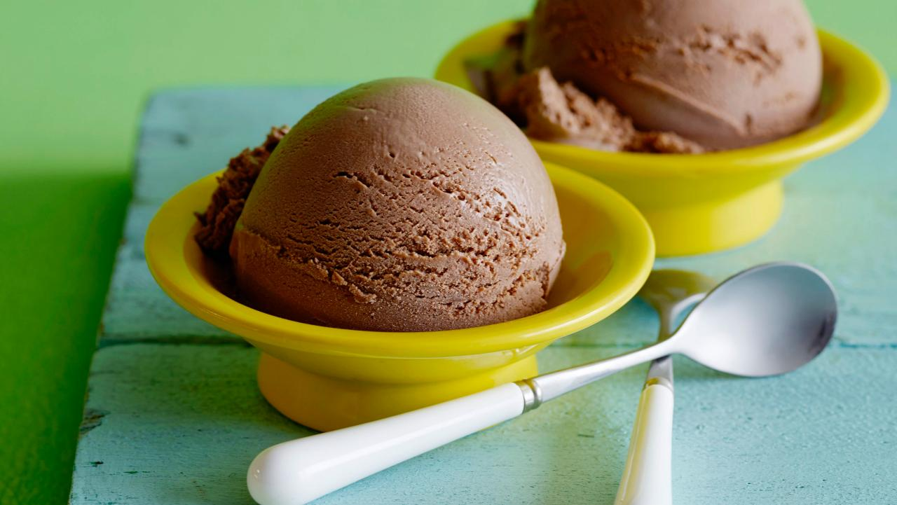

Home
Chocolate Ice Cream

Description
Alton Brown's yummy Chocolate ice cream recipe!
Ingredients
- 1 1/2 ounces unsweetened cocoa powder, approximately 1/2 cup
- 3 cups half-and-half
- 1 cup heavy cream
- 8 large egg yolks
- 9 ounces sugar
- 2 teaspoons pure vanilla extract
Steps
- Place the cocoa powder along with 1 cup of the half-and-half into a medium saucepan over medium heat and whisk to combine. Add the remaining half-and-half and the heavy cream. Bring the mixture just to a simmer, stirring occasionally, and remove from the heat.
- In a medium mixing bowl whisk the egg yolks until they lighten in color. Gradually add the sugar and whisk to combine. Temper the cream mixture into the eggs and sugar by gradually adding small amounts, until about 1/3 of the cream mixture has been added. Pour in the remainder and return the entire mixture to the saucepan and place over low heat. Continue to cook, stirring frequently, until the mixture thickens slightly and coats the back of a spoon and reaches 170 to 175 degrees F. Pour the mixture into a container and allow to sit at room temperature for 30 minutes. Stir in the vanilla extract. Place the mixture into the refrigerator and once it is cool enough not to form condensation on the lid, cover and store for 4 to 8 hours or until the temperature reaches 40 degrees F or below.
- Pour into an ice cream maker and process according to the manufacturer's directions. This should take approximately 25 to 35 minutes. Serve as is for soft serve or freeze for another 3 to 4 hours to allow the ice cream to harden.